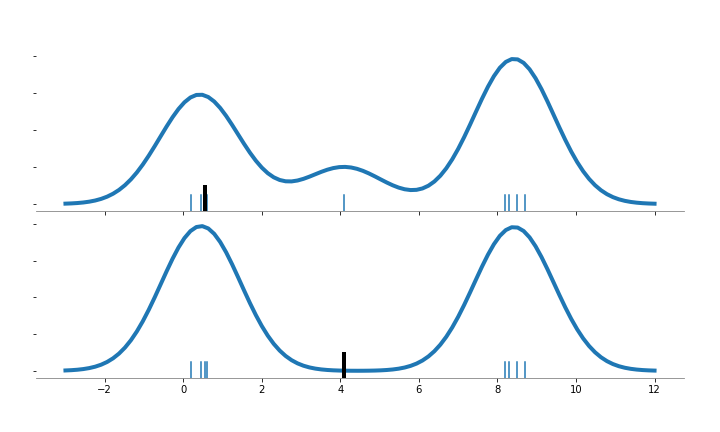

Detección de outliers usando Local Outlier Factor — 8:54 min
8:54 min | Última modificación: Septiembre 23, 2021 | YouTube
Essta metodología computa un score (local outlier factor) que refleja el grado de anormalidad de las observaciones. El método se basa en medir la densidad local respecto a sus vecinos. La siguiente figura contiene ocho puntos con dos clusters de concentración (cuatro puntos por cluster), más un outlier en \(x=4.1\).
Haciendo una analogía con el KDE, se estima la pdf sin tener en cuenta el punto marcado con la línea negra. Note el efecto cuando el punto ignorado en el KDE esta en una región poblada o despoblada.

Esta técnica usa la metodología de vecinos más cercanos. A cada punto se le da un score que es el promedio de sus \(k\) vecinos más cercanos.
El número de vecinos debería ser: a) mayor que el mínimo número de puntos que debería contener un cluster, y b) menor que máximo número de puntos que deben aparecer en un cluster. En la práctica se recomienda que sea 20.
https://scikit-learn.org/stable/auto_examples/neighbors/plot_lof_outlier_detection.html
[1]:
import matplotlib.pyplot as plt
import numpy as np
from sklearn.neighbors import LocalOutlierFactor
np.random.seed(42)
X_inliers = 0.3 * np.random.randn(100, 2)
X_inliers = np.r_[X_inliers + 2, X_inliers - 2]
X_outliers = np.random.uniform(low=-4, high=4, size=(20, 2))
X = np.r_[X_inliers, X_outliers]
n_outliers = len(X_outliers)
ground_truth = np.ones(len(X), dtype=int)
ground_truth[-n_outliers:] = -1
clf = LocalOutlierFactor(
# -----------------------------------------------------
# Number of neighbors to use by default for kneighbors
# queries
n_neighbors=20,
# -----------------------------------------------------
# Algorithm used to compute the nearest neighbors
# 'ball_tree'
# 'kd_tree'
# 'brute'
# 'auto'
algorithm="auto",
# -----------------------------------------------------
# The amount of contamination of the data set, i.e. the
# proportion of outliers in the data set.
contamination=0.1,
)
y_pred = clf.fit_predict(X)
n_errors = (y_pred != ground_truth).sum()
X_scores = clf.negative_outlier_factor_
plt.figure(figsize=(9, 9))
plt.scatter(X[:, 0], X[:, 1], color="k", s=3.0, label="Data points")
radius = (X_scores.max() - X_scores) / (X_scores.max() - X_scores.min())
plt.scatter(
X[:, 0],
X[:, 1],
s=1000 * radius,
edgecolors="r",
facecolors="none",
label="Outlier scores",
linewidths=2,
)
plt.axis("tight")
plt.xlim((-5, 5))
plt.ylim((-5, 5))
plt.xlabel("prediction errors: %d" % (n_errors))
legend = plt.legend(loc="upper left")
legend.legendHandles[0]._sizes = [10]
legend.legendHandles[1]._sizes = [20]
plt.gca().spines["left"].set_color("gray")
plt.gca().spines["bottom"].set_color("gray")
plt.gca().spines["top"].set_visible(False)
plt.gca().spines["right"].set_visible(False)
plt.show()

[2]:
def figura_auxiliar():
def format_plot(i_plot):
ax[i_plot].spines["left"].set_visible(False)
ax[i_plot].spines["bottom"].set_color("gray")
ax[i_plot].spines["top"].set_visible(False)
ax[i_plot].spines["right"].set_visible(False)
plt.setp(ax[i_plot].get_yticklabels(), visible=False)
import matplotlib.pyplot as plt
import numpy as np
from sklearn.neighbors import KernelDensity
x_data = [0.2, 0.45, 0.6, 0.55]
x_data += [8.2, 8.5, 8.3, 8.7]
x_data += [4.1]
n_points = len(x_data)
x_plot = np.linspace(-3, 12, 100)[:, None]
fig, ax = plt.subplots(2, 1, sharex=True, figsize=(10, 6))
fig.subplots_adjust(left=0.05, right=0.95, hspace=0.05, wspace=0.05)
for i_plot, i_point in enumerate([3, 8]):
x_sample = x_data.copy()
del x_sample[i_point]
x_sample = np.array(x_sample)[:, None]
kernelDensity = KernelDensity(kernel="gaussian").fit(x_sample)
log_dens = kernelDensity.score_samples(x_plot)
ax[i_plot].plot(x_plot, np.exp(log_dens), "-", color="tab:blue", linewidth=4)
format_plot(i_plot)
for x_ in x_sample:
ax[i_plot].axvline(x_, 0, 0.1)
ax[i_plot].axvline(x_data[i_point], 0, 0.15, color="k", linewidth=4)
plt.savefig("assets/local_outlier_kde.png")
figura_auxiliar()